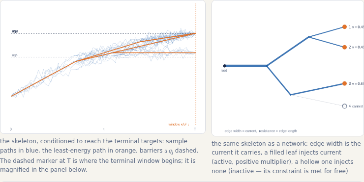

Back to square one
Animated: Brownian motion sent back to xR at Poisson times. The search for a level u has a best reset rate λ*, the steady state is an asymmetric Laplace law, and the tail of the supremum depends on the sign of xR — never reset, or reset exactly once, immediately. From Dębicki, Hashorva & Michna.
Open →

A max-stable field on a binary tree
Brown–Resnick construction driven by a Gaussian branching random walk. Colours show which Poisson point wins at each vertex; zoom into any subtree and it looks like the whole.
Open →

Where the Euler characteristic ends and Pickands begins
Turn the roughness α of a Gaussian field from 2 downwards: the Euler-characteristic heuristic gives way to Pickands–Piterbarg asymptotics and the constant ℋα. A companion to Pavel Ievlev's illustration.
Open →

Hitting a quadrant
Animated: the rare correlated Brownian paths with drift that ever enter a quadrant. Raise the correlation and watch the entry point move from the corner to the edge — the dimension reduction of Dębicki, Hashorva, Ji & Rolski.
Open →

Simultaneous exceedance, stationary case
The Ornstein–Uhlenbeck companion: entry times are uniform, so dimension reduction shows up as the slack of the second coordinate at entry. From Dębicki, Hashorva & Wang.
Open →

The most likely path of a large exponential integral
For ∫eX with X fractional Brownian, the paths that exceed a large b cluster around the RKHS minimiser, and the Jensen–Gaussian bound is exact for H > ½, off by √2 at H = ½. From Hashorva & Novikov.
Open →

How long does a Gaussian queue remember?
The workload of a queue fed by fractional Brownian motion inherits the memory of its input: Cov(Q(0), Q(r)) ~ H(2H−1)(Eτ)² r2H−2, with Brownian input the exponential exception. From Dębicki, Hashorva & Novikov.
Open →

Parisian ruin of branching Brownian motion
Animated trees in which every particle alive stays above the line u + ct for a whole window: probability C e−κu, κ = c + √(c²+2β), with the ruin time centred at u/a. From Hashorva, Novikov & Shashkov.
Open →

Staying high everywhere
The infimum of fractional Brownian motion over two intervals: for H > ½ the conditioned paths touch the level at one point and lift off; for Brownian motion they hug it everywhere — dominated versus full contact. From Dębicki, Hashorva & Novikov.
Open →

Persistence of a Brown–Resnick process
The max-stable envelope assembled from its log-normal spectral curves; how many exceed a level somewhere (Pickands, linear in T) versus throughout (the expected infimum 𝒢V(T), decaying like 2Ψ(√γV(T)) for H > ½). From Dębicki, Hashorva & Novikov.
Open →

A particle system with no clock of its own
Poisson-rescaled copies of one mark: the system is stationary although every curve is anchored at its own origin, and a mixture of two non-stationary components can be stationary. From Hashorva.
Open →

The angle a rare event chooses
Two constraints on a squared Brownian norm: as the threshold ratio moves, the conditional angular cloud turns from a full Gaussian blob to exactly half of one, then clings to the switching curve and costs a factor u−1/2. From Hashorva.
Open →

Ruin on a Brownian metric tree
All leaves must cross their barriers at one common time. The exponent is an obstacle problem on an electrical network — active leaves inject current, inactive ones are carried along — and the constant lives in the terminal window. From Hashorva.
Open →

Ruin in every block, ruin in every window
Animated: Brownian paths rain down until one exceeds u in each of m reporting blocks, or in every sliding window of length h. The first hit crowds against h, and what follows is a finite-level event: p ∼ 2GmΨ((u+ch)/√h). From Dębicki, Hashorva & Michna.
Open →

Sojourns of a bivariate Gaussian field
Two correlated stationary components on a square; the set where both exceed a level u, and how its area decays as u grows.
Open →